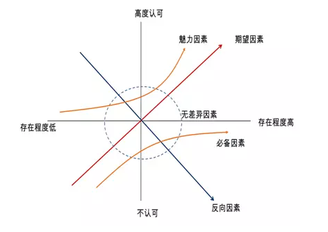
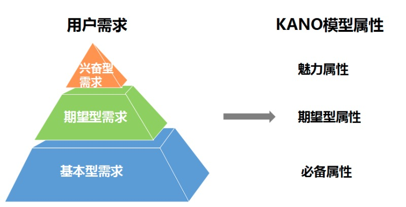
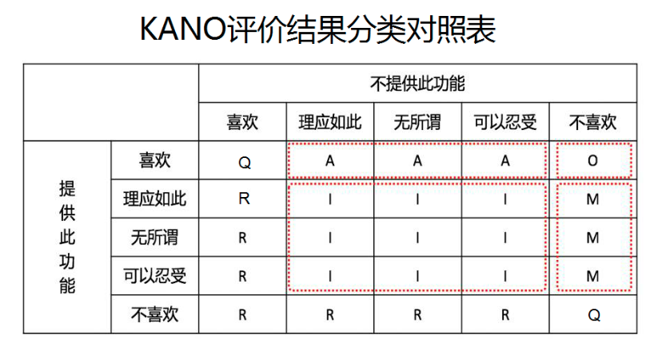
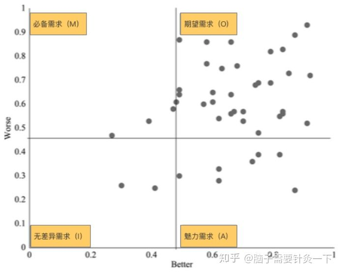

<!DOCTYPE html>
<html>
<head><meta name="generator" content="Hexo 3.8.0">
  <meta charset="utf-8">
  
  <title>kano模型 | guowj</title>
  <meta name="viewport" content="width=device-width, initial-scale=1, maximum-scale=1">
  
  <meta name="keywords" content="产品kano工具">
  
  
  
  
  <meta name="description" content="&amp;nbsp;&amp;nbsp;&amp;nbsp;&amp;nbsp;&amp;nbsp;&amp;nbsp;kano模型分析法是授野纪昭以客户满意度为模型设计了一种新的方法论。凭我们主观的去判断用户的需求是不太准确的。kano模型主要是分析用户对于某项事物到底满不满意，然后将数据汇总起来，用一个客观的数据去分析用户到底是喜欢的还是不喜欢的。它可以用数据去捕获用户真正的需求，帮助产品更好地迭代升级。">
<meta name="keywords" content="产品,kano,工具">
<meta property="og:type" content="article">
<meta property="og:title" content="kano模型">
<meta property="og:url" content="https://gwjacqueline.github.io/kano模型/index.html">
<meta property="og:site_name" content="guowj">
<meta property="og:description" content="&amp;nbsp;&amp;nbsp;&amp;nbsp;&amp;nbsp;&amp;nbsp;&amp;nbsp;kano模型分析法是授野纪昭以客户满意度为模型设计了一种新的方法论。凭我们主观的去判断用户的需求是不太准确的。kano模型主要是分析用户对于某项事物到底满不满意，然后将数据汇总起来，用一个客观的数据去分析用户到底是喜欢的还是不喜欢的。它可以用数据去捕获用户真正的需求，帮助产品更好地迭代升级。">
<meta property="og:locale" content="zh-CN">
<meta property="og:image" content="https://gwjacqueline.github.io/images/kano.png">
<meta property="og:image" content="https://gwjacqueline.github.io/images/kano-need.jpg">
<meta property="og:image" content="https://gwjacqueline.github.io/images/kanoExecl.png">
<meta property="og:image" content="https://gwjacqueline.github.io/images/kanoBW.jpg">
<meta property="og:updated_time" content="2019-06-20T03:37:06.000Z">
<meta name="twitter:card" content="summary">
<meta name="twitter:title" content="kano模型">
<meta name="twitter:description" content="&amp;nbsp;&amp;nbsp;&amp;nbsp;&amp;nbsp;&amp;nbsp;&amp;nbsp;kano模型分析法是授野纪昭以客户满意度为模型设计了一种新的方法论。凭我们主观的去判断用户的需求是不太准确的。kano模型主要是分析用户对于某项事物到底满不满意，然后将数据汇总起来，用一个客观的数据去分析用户到底是喜欢的还是不喜欢的。它可以用数据去捕获用户真正的需求，帮助产品更好地迭代升级。">
<meta name="twitter:image" content="https://gwjacqueline.github.io/images/kano.png">
  
    <link rel="alternate" href="/atom.xml" title="guowj" type="application/atom+xml">
  

  

  <link rel="icon" href="/css/images/mylogo.png">
  <link rel="apple-touch-icon" href="/css/images/mylogo.png">
  
    <link href="//fonts.googleapis.com/css?family=Source+Code+Pro" rel="stylesheet" type="text/css">
  
  <link href="https://fonts.googleapis.com/css?family=Open+Sans|Montserrat:700" rel="stylesheet" type="text/css">
  <link href="https://fonts.googleapis.com/css?family=Roboto:400,300,300italic,400italic" rel="stylesheet" type="text/css">
  <link href="//netdna.bootstrapcdn.com/font-awesome/4.0.3/css/font-awesome.css" rel="stylesheet">
  <style type="text/css">
    @font-face{font-family:futura-pt; src:url("../css/fonts/FuturaPTBold.otf") format("woff");font-weight:500;font-style:normal;}
    @font-face{font-family:futura-pt-light; src:url("../css/fonts/FuturaPTBook.otf") format("woff");font-weight:lighter;font-style:normal;}
    @font-face{font-family:futura-pt-italic; src:url("../css/fonts/FuturaPTBookOblique.otf") format("woff");font-weight:400;font-style:italic;}
}

  </style>
  <link rel="stylesheet" href="/css/style.css">

  <script src="/js/jquery-3.1.1.min.js"></script>
  <script src="/js/bootstrap.js"></script>

  <!-- Bootstrap core CSS -->
  <link rel="stylesheet" href="/css/bootstrap.css">

  
    <link rel="stylesheet" href="/css/dialog.css">
  

  

  
    <link rel="stylesheet" href="/css/header-post.css">
  

  
  
  
    <link rel="stylesheet" href="/css/vdonate.css">
  

</head>
</html>


  <body data-spy="scroll" data-target="#toc" data-offset="50">


  
  <div id="container">
    <div id="wrap">
      
        <header>

    <div id="allheader" class="navbar navbar-default navbar-static-top" role="navigation">
        <div class="navbar-inner">
          
          <div class="container"> 
            <button type="button" class="navbar-toggle" data-toggle="collapse" data-target=".navbar-collapse">
              <span class="sr-only">Toggle navigation</span>
              <span class="icon-bar"></span>
              <span class="icon-bar"></span>
              <span class="icon-bar"></span>
            </button>

            
              <a class="brand" style="
                 margin-top: 0px;" href="#" data-toggle="modal" data-target="#myModal">
                  
              </a>
            
            
            <div class="navbar-collapse collapse">
              <ul class="hnav navbar-nav">
                
                  <li> <a class="main-nav-link" href="/">首页</a> </li>
                
                  <li> <a class="main-nav-link" href="/archives">归档</a> </li>
                
                  <li> <a class="main-nav-link" href="/categories">分类</a> </li>
                
                  <li> <a class="main-nav-link" href="/tags">标签</a> </li>
                
                  <li><div id="search-form-wrap">

    <form class="search-form">
        <input type="text" class="ins-search-input search-form-input" placeholder>
        <button type="submit" class="search-form-submit"></button>
    </form>
    <div class="ins-search">
    <div class="ins-search-mask"></div>
    <div class="ins-search-container">
        <div class="ins-input-wrapper">
            <input type="text" class="ins-search-input" placeholder="请输入关键词...">
            <span class="ins-close ins-selectable"><i class="fa fa-times-circle"></i></span>
        </div>
        <div class="ins-section-wrapper">
            <div class="ins-section-container"></div>
        </div>
    </div>
</div>
<script>
(function (window) {
    var INSIGHT_CONFIG = {
        TRANSLATION: {
            POSTS: '文章',
            PAGES: '页面',
            CATEGORIES: '分类',
            TAGS: '标签',
            UNTITLED: '(无标题)',
        },
        ROOT_URL: '/',
        CONTENT_URL: '/content.json',
    };
    window.INSIGHT_CONFIG = INSIGHT_CONFIG;
})(window);
</script>
<script src="/js/insight.js"></script>

</div></li>
            </ul></div>
          </div>
                
      </div>
    </div>

</header>


      
            
      <div id="content" class="outer">
        
          <section id="main" style="float:none;"><article id="post-kano模型" style="width: 75%; float:left;" class="article article-type-post" itemscope itemprop="blogPost">
  <div id="articleInner" class="article-inner">
    
    
      <header class="article-header">
        
  
    <h1 class="thumb" itemprop="name">
      kano模型
    </h1>
  

      </header>
    
    <div class="article-meta">
      
	<a href="/kano模型/" class="article-date">
	  <time datetime="2019-06-16T03:38:45.000Z" itemprop="datePublished">2019-06-16</time>
	</a>

      
    <a class="article-category-link" href="/categories/产品/">产品</a>

      
	<a class="article-views">
	<span id="busuanzi_container_page_pv">
		阅读量<span id="busuanzi_value_page_pv"></span>
	</span>
	</a>

      

    </div>
    <div class="article-entry" itemprop="articleBody">
      
        <blockquote>
<p>&nbsp;&nbsp;&nbsp;&nbsp;&nbsp;&nbsp;<code>kano</code>模型分析法是授野纪昭以客户满意度为模型设计了一种新的方法论。凭我们主观的去判断用户的需求是不太准确的。<code>kano</code>模型主要是分析用户对于某项事物到底满不满意，然后将数据汇总起来，用一个客观的数据去分析用户到底是喜欢的还是不喜欢的。它可以用数据去捕获用户真正的需求，帮助产品更好地迭代升级。</p>
</blockquote>
<a id="more"></a>
<h2 id="kano-模型的由来"><a href="#kano-模型的由来" class="headerlink" title="kano 模型的由来"></a>kano 模型的由来</h2><p>&nbsp;&nbsp;&nbsp;&nbsp;&nbsp;&nbsp;<code>kano</code>模型是受到<code>双因素理论</code>的启发。<code>双因素理论</code>认为引起人们工作动机的因素主要有两个：一个是保健因素，二是激励因素，只有激励因素才能够给人们带来满意感，而保健因素只能消除人们的不满，但不会到来满意感。简单来说，在传统的观念里，只有满意和不满意。但在<code>双因素理论</code>中，激励因素代表的是<code>满意</code>和<code>没有满意</code>，而保健因素代表的是<code>没有不满意</code>和<code>不满意</code></p>
<h2 id="kano-模型"><a href="#kano-模型" class="headerlink" title="kano 模型"></a>kano 模型</h2><blockquote>
<p>Kano（卡诺）模型展示了不同类型的需求对用户满意度的影响,分为五类影响因素。</p>
</blockquote>
<div align="center"><br>  <br></div>

<h3 id="魅力因素-Attractive-Quality-Element"><a href="#魅力因素-Attractive-Quality-Element" class="headerlink" title="魅力因素(Attractive Quality Element)"></a>魅力因素(Attractive Quality Element)</h3><p>&nbsp;&nbsp;&nbsp;&nbsp;&nbsp;&nbsp;此需求具备时，用户满意度会有很大提升，但如果不提供此需求，用户满意度也不会降低。</p>
<h4 id="例子"><a href="#例子" class="headerlink" title="例子"></a>例子</h4><p>&nbsp;&nbsp;&nbsp;&nbsp;&nbsp;&nbsp;海底捞等位做美甲</p>
<h3 id="期望因素-One-dimensional-quality-Element-又称一维因素"><a href="#期望因素-One-dimensional-quality-Element-又称一维因素" class="headerlink" title="期望因素(One-dimensional quality Element),又称一维因素"></a>期望因素(One-dimensional quality Element),又称一维因素</h3><p>&nbsp;&nbsp;&nbsp;&nbsp;&nbsp;&nbsp;当提供此需求，用户满意度会提升，当不提供此需求，用户满意度会降低</p>
<h4 id="例子-1"><a href="#例子-1" class="headerlink" title="例子"></a>例子</h4><p>&nbsp;&nbsp;&nbsp;&nbsp;&nbsp;&nbsp;火锅店的牛肉越便宜越爽，上网速度越快越爽</p>
<h3 id="必备因素-Must-be-quality-Element"><a href="#必备因素-Must-be-quality-Element" class="headerlink" title="必备因素(Must-be quality Element)"></a>必备因素(Must-be quality Element)</h3><p>&nbsp;&nbsp;&nbsp;&nbsp;&nbsp;&nbsp;当优化此需求，用户满意度不会提升，当不提供此需求，用户满意度会大幅降低；</p>
<h4 id="例子-2"><a href="#例子-2" class="headerlink" title="例子"></a>例子</h4><p>&nbsp;&nbsp;&nbsp;&nbsp;&nbsp;&nbsp;手机一定能打电话，火锅店一定要有牛肉</p>
<h3 id="无差异因素-Indifferent-quality-Element"><a href="#无差异因素-Indifferent-quality-Element" class="headerlink" title="无差异因素(Indifferent quality Element)"></a>无差异因素(Indifferent quality Element)</h3><p>&nbsp;&nbsp;&nbsp;&nbsp;&nbsp;&nbsp;论提供或不提供此需求，用户满意度都不会有改变，用户根本不在意</p>
<h4 id="例子-3"><a href="#例子-3" class="headerlink" title="例子"></a>例子</h4><p>&nbsp;&nbsp;&nbsp;&nbsp;&nbsp;&nbsp;火锅店下水管质量非常好</p>
<h3 id="反向因素-Reverse-quality-Element"><a href="#反向因素-Reverse-quality-Element" class="headerlink" title="反向因素(Reverse quality Element)"></a>反向因素(Reverse quality Element)</h3><p>&nbsp;&nbsp;&nbsp;&nbsp;&nbsp;&nbsp;此需求具备时，会导致客户不满意，反之，不具备时，顾客反而会感到满意</p>
<h4 id="例子-4"><a href="#例子-4" class="headerlink" title="例子"></a>例子</h4><p>&nbsp;&nbsp;&nbsp;&nbsp;&nbsp;&nbsp; 游戏技能越改越差</p>
<blockquote>
<p>从 KANO 模型的因素分类可以发现，KANO 并不是直接用来测量用户满意度的方法，而是通过对用户的不同需求进行区分处理，帮助产品找出提高用户满意度的切入点。它常用于对影响指标进行分类，帮助产品了解不同层次的用户需求，识别使用户满意的至关重要的因素。从以上五个要素得知，我们做产品设计时，需要尽量避免无差异属性、反向属性，至少做好必要属性、一维属性，努力做魅力属性。</p>
</blockquote>
<p><strong>注意：对于客户来说，产品的质量特性是动态的，上诉这五种要素会互相转换。</strong></p>
<h2 id="根据-KANO-模型进行用户需求分类"><a href="#根据-KANO-模型进行用户需求分类" class="headerlink" title="根据 KANO 模型进行用户需求分类"></a>根据 KANO 模型进行用户需求分类</h2><p>&nbsp;&nbsp;&nbsp;&nbsp;&nbsp;&nbsp; 根据<code>kano</code>模型，可以将五类影响因素与用户需求的优先级对于，便于实际的应用。主要分为：基本型需求(必备因素)、期望型需求(期望因素)、兴奋型需求(魅力因素)。</p>
<div align="center"><br>  <br></div>

<p>从上图可以看出处于金字塔底端的为用户基本型需求，也是核心需求，是产品必须做的功能。这里我们可以总结下<code>kano</code>模型 5 个需求的排序为：</p>
<figure class="highlight plain"><table><tr><td class="gutter"><pre><span class="line">1</span><br></pre></td><td class="code"><pre><span class="line">必备&gt;期望&gt;魅力&gt;无差异&gt;反向</span><br></pre></td></tr></table></figure>
<h2 id="kano-模型的应用"><a href="#kano-模型的应用" class="headerlink" title="kano 模型的应用"></a>kano 模型的应用</h2><h3 id="问卷调查"><a href="#问卷调查" class="headerlink" title="问卷调查"></a>问卷调查</h3><p>&nbsp;&nbsp;&nbsp;&nbsp;&nbsp;&nbsp;Kano（卡诺）模型的使用，我们一般会采用问卷的方式，让被调查者将各个需求按照 Kano 分析的质量分类表，选择相应需求的分类。</p>
<div align="center"><br>  <br></div>

<p>例如：如某一功能，一个调查者认为，有该功能我很喜欢，没有该功能，我很讨厌。那么根据 Kano 分析的质量分类表，这个功能的因素是 O。这说明，这个功能对于当前的这个调查者是期望需求</p>
<h3 id="数据收集及系统分析"><a href="#数据收集及系统分析" class="headerlink" title="数据收集及系统分析"></a>数据收集及系统分析</h3><p>&nbsp;&nbsp;&nbsp;&nbsp;&nbsp;&nbsp;当一次调查结束时，我们可能看得到某个功能，有 2 个 A，5 个 O，279 个 M，10 个 I，4 个 R，0 个 Q。首页，我们可以将反向因素（R）和可疑因素（Q）较多的需求排除。如果 M 和 O 的系数相近时，我们就不太好直接说这个功能是“期望”还是“必备”的。这个时候，我们就要进行系数分析了</p>
<h4 id="系数分析"><a href="#系数分析" class="headerlink" title="系数分析"></a>系数分析</h4><p>&nbsp;&nbsp;&nbsp;&nbsp;&nbsp;&nbsp;我们通过 Better-Worse 系数来构建要素系数的象限，把落到相应象限的需求，划分到相应的需求分类中去。然后根据需求的不同，就可以进行需求的排序了。4 个需求的排序为：必备&gt;期望&gt;魅力&gt;无差异。</p>
<h5 id="Better-Worse-系数计算"><a href="#Better-Worse-系数计算" class="headerlink" title="Better-Worse 系数计算"></a>Better-Worse 系数计算</h5><figure class="highlight plain"><table><tr><td class="gutter"><pre><span class="line">1</span><br><span class="line">2</span><br></pre></td><td class="code"><pre><span class="line">Better=(A+O)/(A+O+M+I);</span><br><span class="line">Worse=(O+M)/(A+O+M+I)；</span><br></pre></td></tr></table></figure>
<p>得出的系数，需求归类如下:</p>
<blockquote>
<p>第一象限：Better&gt;0.5，Worse&gt;0.5，属于期望需求；<br>第二象限：Better&lt;0.5，Worse&gt;0.5，属于必备需求；<br>第三象限：Better&lt;0.5，Worse&gt;0.5，属于无差异需求；<br>第四象限：Better&gt;0.5，Worse&lt;0.5，属于魅力需求；</p>
</blockquote>
<div align="center"><br>  <br></div>

      
    </div>
    <footer class="article-footer">
      
        <div id="donation_div"></div>

<script src="/js/vdonate.js"></script>
<script>
var a = new Donate({
  title: '如果觉得我的文章对您有用，请随意打赏。您的支持将鼓励我继续创作!', // 可选参数，打赏标题
  btnText: '打赏支持', // 可选参数，打赏按钮文字
  el: document.getElementById('donation_div'),
  wechatImage: '../images/wx.jpeg',
  alipayImage: '../images/zfb.jpg'
});
</script>
      
      
      <div>
        <ul class="post-copyright">
          <li class="post-copyright-author">
          <strong>本文作者:  </strong>guowj
          </li>
          <li class="post-copyright-link">
          <strong>本文链接:  </strong>
          <a href="/kano模型/" target="_blank" title="kano模型">https://gwjacqueline.github.io/kano模型/</a>
          </li>
          <li class="post-copyright-license">
            <strong>版权声明:   </strong>
            本博客所有文章除特别声明外，均采用 <a rel="license" href="https://creativecommons.org/licenses/by-nc-nd/4.0/" target="_blank" title="Attribution-NonCommercial-NoDerivatives 4.0 International (CC BY-NC-ND 4.0)">CC BY-NC-ND 4.0</a>
            许可协议。转载请注明出处
          </li>
         
        </ul>
<div>
</div></div>
      
      
        
	<div id="comment">
		<!-- 来必力City版安装代码 -->
		<div id="lv-container" data-id="city" data-uid="MTAyMC80MzU1OS8yMDA5OA==" ">
		<script type="text/javascript">
		   (function(d, s) {
		       var j, e = d.getElementsByTagName(s)[0];

		       if (typeof LivereTower === 'function') { return; }

		       j = d.createElement(s);
		       j.src = 'https://cdn-city.livere.com/js/embed.dist.js';
		       j.async = true;

		       e.parentNode.insertBefore(j, e);
		   })(document, 'script');
		</script>
		<noscript>为正常使用来必力评论功能请激活JavaScript</noscript>
		</div>
		<!-- City版安装代码已完成 -->
	</div>


      
      
        
  <ul class="article-tag-list"><li class="article-tag-list-item"><a class="article-tag-list-link" href="/tags/kano/">kano</a></li><li class="article-tag-list-item"><a class="article-tag-list-link" href="/tags/产品/">产品</a></li><li class="article-tag-list-item"><a class="article-tag-list-link" href="/tags/工具/">工具</a></li></ul>

      

    </footer>
  </div>
  
    
<nav id="article-nav">
  
    <a href="/交互设计七大定律上/" id="article-nav-newer" class="article-nav-link-wrap">
      <strong class="article-nav-caption">上一篇</strong>
      <div class="article-nav-title">
        
          交互设计七大定律上
        
      </div>
    </a>
  
  
    <a href="/vue-实现原理(二)/" id="article-nav-older" class="article-nav-link-wrap">
      <strong class="article-nav-caption">下一篇</strong>
      <div class="article-nav-title">vue 实现原理(二)</div>
    </a>
  
</nav>

  
</article>

<!-- Table of Contents -->

  <aside id="toc-sidebar">
    <div id="toc" class="toc-article">
    <strong class="toc-title">文章目录</strong>
    
        <ol class="nav"><li class="nav-item nav-level-2"><a class="nav-link" href="#kano-模型的由来"><span class="nav-number">1.</span> <span class="nav-text">kano 模型的由来</span></a></li><li class="nav-item nav-level-2"><a class="nav-link" href="#kano-模型"><span class="nav-number">2.</span> <span class="nav-text">kano 模型</span></a><ol class="nav-child"><li class="nav-item nav-level-3"><a class="nav-link" href="#魅力因素-Attractive-Quality-Element"><span class="nav-number">2.1.</span> <span class="nav-text">魅力因素(Attractive Quality Element)</span></a><ol class="nav-child"><li class="nav-item nav-level-4"><a class="nav-link" href="#例子"><span class="nav-number">2.1.1.</span> <span class="nav-text">例子</span></a></li></ol></li><li class="nav-item nav-level-3"><a class="nav-link" href="#期望因素-One-dimensional-quality-Element-又称一维因素"><span class="nav-number">2.2.</span> <span class="nav-text">期望因素(One-dimensional quality Element),又称一维因素</span></a><ol class="nav-child"><li class="nav-item nav-level-4"><a class="nav-link" href="#例子-1"><span class="nav-number">2.2.1.</span> <span class="nav-text">例子</span></a></li></ol></li><li class="nav-item nav-level-3"><a class="nav-link" href="#必备因素-Must-be-quality-Element"><span class="nav-number">2.3.</span> <span class="nav-text">必备因素(Must-be quality Element)</span></a><ol class="nav-child"><li class="nav-item nav-level-4"><a class="nav-link" href="#例子-2"><span class="nav-number">2.3.1.</span> <span class="nav-text">例子</span></a></li></ol></li><li class="nav-item nav-level-3"><a class="nav-link" href="#无差异因素-Indifferent-quality-Element"><span class="nav-number">2.4.</span> <span class="nav-text">无差异因素(Indifferent quality Element)</span></a><ol class="nav-child"><li class="nav-item nav-level-4"><a class="nav-link" href="#例子-3"><span class="nav-number">2.4.1.</span> <span class="nav-text">例子</span></a></li></ol></li><li class="nav-item nav-level-3"><a class="nav-link" href="#反向因素-Reverse-quality-Element"><span class="nav-number">2.5.</span> <span class="nav-text">反向因素(Reverse quality Element)</span></a><ol class="nav-child"><li class="nav-item nav-level-4"><a class="nav-link" href="#例子-4"><span class="nav-number">2.5.1.</span> <span class="nav-text">例子</span></a></li></ol></li></ol></li><li class="nav-item nav-level-2"><a class="nav-link" href="#根据-KANO-模型进行用户需求分类"><span class="nav-number">3.</span> <span class="nav-text">根据 KANO 模型进行用户需求分类</span></a></li><li class="nav-item nav-level-2"><a class="nav-link" href="#kano-模型的应用"><span class="nav-number">4.</span> <span class="nav-text">kano 模型的应用</span></a><ol class="nav-child"><li class="nav-item nav-level-3"><a class="nav-link" href="#问卷调查"><span class="nav-number">4.1.</span> <span class="nav-text">问卷调查</span></a></li><li class="nav-item nav-level-3"><a class="nav-link" href="#数据收集及系统分析"><span class="nav-number">4.2.</span> <span class="nav-text">数据收集及系统分析</span></a><ol class="nav-child"><li class="nav-item nav-level-4"><a class="nav-link" href="#系数分析"><span class="nav-number">4.2.1.</span> <span class="nav-text">系数分析</span></a><ol class="nav-child"><li class="nav-item nav-level-5"><a class="nav-link" href="#Better-Worse-系数计算"><span class="nav-number">4.2.1.1.</span> <span class="nav-text">Better-Worse 系数计算</span></a></li></ol></li></ol></li></ol></li></ol>
    
    </div>
  </aside>

</section>
        
      </div>
      
      <footer id="footer">
  

  <div class="container">
      	<div class="row">
	      <!--<p> Powered by <a href="http://hexo.io/" target="_blank">Hexo</a> and <a href="https://github.com/iTimeTraveler/hexo-theme-hiker" target="_blank">Hexo-theme-hiker</a> </p>-->
	      <p id="copyRightEn">Copyright &copy;2019 guowj All Rights Reserved.</p>
	      
	      
    		<p class="busuanzi_uv">
				访客数 : <span id="busuanzi_value_site_uv"></span> |  
				访问量 : <span id="busuanzi_value_site_pv"></span>
		    </p>
  		   
		</div>

		
  </div>
</footer>


<!-- min height -->

<script>
    var wrapdiv = document.getElementById("wrap");
    var contentdiv = document.getElementById("content");
    var allheader = document.getElementById("allheader");

    wrapdiv.style.minHeight = document.body.offsetHeight + "px";
    if (allheader != null) {
      contentdiv.style.minHeight = document.body.offsetHeight - allheader.offsetHeight - document.getElementById("footer").offsetHeight + "px";
    } else {
      contentdiv.style.minHeight = document.body.offsetHeight - document.getElementById("footer").offsetHeight + "px";
    }
</script>
    </div>
    <!-- <nav id="mobile-nav">
  
    <a href="/" class="mobile-nav-link">Home</a>
  
    <a href="/archives" class="mobile-nav-link">Archives</a>
  
    <a href="/categories" class="mobile-nav-link">Categories</a>
  
    <a href="/tags" class="mobile-nav-link">Tags</a>
  
</nav> -->
    

<!-- mathjax config similar to math.stackexchange -->

<script type="text/x-mathjax-config">
  MathJax.Hub.Config({
    tex2jax: {
      inlineMath: [ ['$','$'], ["\\(","\\)"] ],
      processEscapes: true
    }
  });
</script>

<script type="text/x-mathjax-config">
    MathJax.Hub.Config({
      tex2jax: {
        skipTags: ['script', 'noscript', 'style', 'textarea', 'pre', 'code']
      }
    });
</script>

<script type="text/x-mathjax-config">
    MathJax.Hub.Queue(function() {
        var all = MathJax.Hub.getAllJax(), i;
        for(i=0; i < all.length; i += 1) {
            all[i].SourceElement().parentNode.className += ' has-jax';
        }
    });
</script>

<script type="text/javascript" src="https://cdnjs.cloudflare.com/ajax/libs/mathjax/2.7.1/MathJax.js?config=TeX-AMS-MML_HTMLorMML">
</script>


  <link rel="stylesheet" href="/fancybox/jquery.fancybox.css">
  <script src="/fancybox/jquery.fancybox.pack.js"></script>


<script src="/js/scripts.js"></script>


  <script src="/js/dialog.js"></script>


	<div style="display: none;">
    <script src="https://s95.cnzz.com/z_stat.php?id=1260716016&web_id=1260716016" language="JavaScript"></script>
  </div>


	<script async src="//busuanzi.ibruce.info/busuanzi/2.3/busuanzi.pure.mini.js">
	</script>


  </div>

  <div class="modal fade" id="myModal" tabindex="-1" role="dialog" aria-labelledby="myModalLabel" aria-hidden="true" style="display: none;">
  <div class="modal-dialog">
    <div class="modal-content">
      <div class="modal-header">
        <h2 class="modal-title" id="myModalLabel">设置</h2>
      </div>
      <hr style="margin-top:0px; margin-bottom:0px; width:80%; border-top: 3px solid #000;">
      <hr style="margin-top:2px; margin-bottom:0px; width:80%; border-top: 1px solid #000;">


      <div class="modal-body">
          <div style="margin:6px;">
            <a data-toggle="collapse" data-parent="#accordion" href="#collapseOne" onclick="javascript:setFontSize();" aria-expanded="true" aria-controls="collapseOne">
              正文字号大小
            </a>
          </div>
          <div id="collapseOne" class="panel-collapse collapse" role="tabpanel" aria-labelledby="headingOne">
          <div class="panel-body">
            您已调整页面字体大小
          </div>
        </div>
      


          <div style="margin:6px;">
            <a data-toggle="collapse" data-parent="#accordion" href="#collapseTwo" onclick="javascript:setBackground();" aria-expanded="true" aria-controls="collapseTwo">
              夜间护眼模式
            </a>
        </div>
          <div id="collapseTwo" class="panel-collapse collapse" role="tabpanel" aria-labelledby="headingTwo">
          <div class="panel-body">
            夜间模式已经开启，再次单击按钮即可关闭 
          </div>
        </div>

        <div>
            <a data-toggle="collapse" data-parent="#accordion" href="#collapseThree" aria-expanded="true" aria-controls="collapseThree">&nbsp;&nbsp;&nbsp;&nbsp;&nbsp;&nbsp;关 于&nbsp;&nbsp;&nbsp;&nbsp;&nbsp;&nbsp;</a>
        </div>
         <div id="collapseThree" class="panel-collapse collapse" role="tabpanel" aria-labelledby="headingThree">
          <div class="panel-body">
            guowj
          </div>
          <div class="panel-body">
            Copyright © 2019 guowj All Rights Reserved.
          </div>
        </div>
      </div>


      <hr style="margin-top:0px; margin-bottom:0px; width:80%; border-top: 1px solid #000;">
      <hr style="margin-top:2px; margin-bottom:0px; width:80%; border-top: 3px solid #000;">
      <div class="modal-footer">
        <button type="button" class="close" data-dismiss="modal" aria-label="Close"><span aria-hidden="true">×</span></button>
      </div>
    </div>
  </div>
</div>
  
  <a id="rocket" href="#top" class=""></a>
  <script type="text/javascript" src="/js/totop.js?v=1.0.0" async=""></script>
  
    <a id="menu-switch"><i class="fa fa-bars fa-lg"></i></a>
  
</body>
</html>